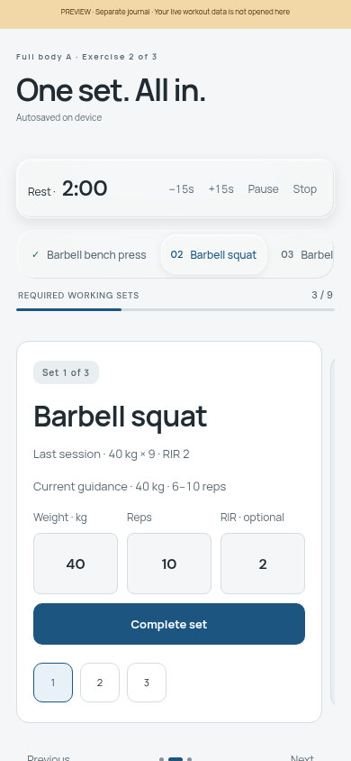
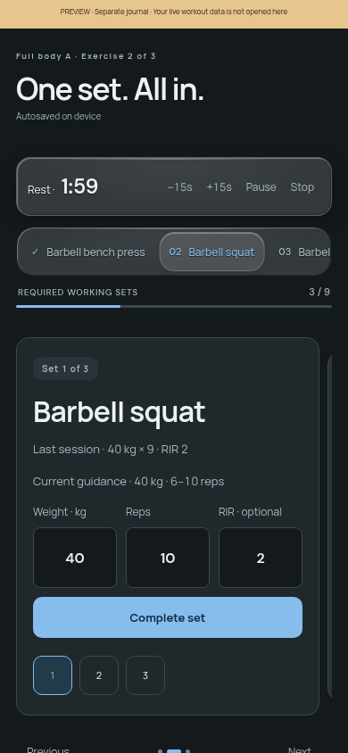
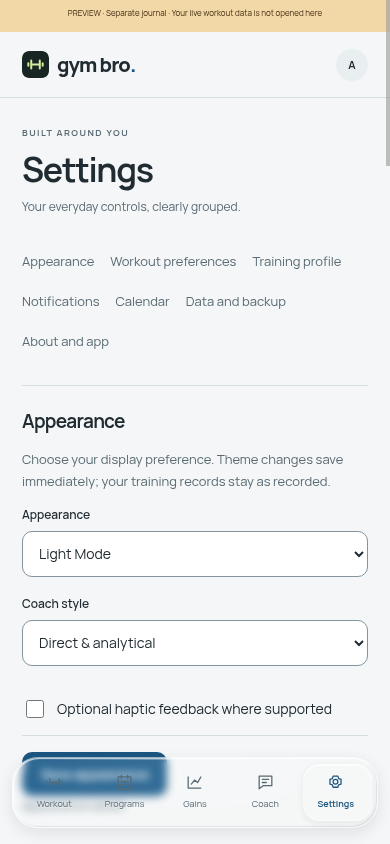
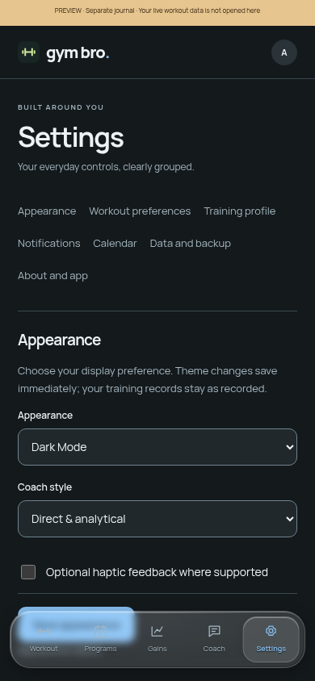

Focus, without friction.
Swipe between exercises, use compact accessible controls, or jump directly from the exercise bar. Fields and vertical scrolling keep their own gestures.
APPROVED DIRECTION, IN THE REAL APP
The carousel, continuous set highlight, grouped Settings, header timer and thin progress line are now integrated with your saved workout.
Production remains on 0.7.0. This preview uses a separate journal; updating keeps its existing records. Nothing has been merged into main.
Swipe between exercises, use compact accessible controls, or jump directly from the exercise bar. Fields and vertical scrolling keep their own gestures.
The completed set saves immediately. The blue plane moves to the next visible set; Reduced Motion uses an immediate state change.
Pause, resume or skip without covering your set inputs. Optional countdown sounds, completion alerts and screen wake lock retain their existing lifecycle.
One page, compact groups and an expandable training profile. Every existing control remains available, including backups, privacy information and updates.
Actual 390px app captures with a synthetic workout. The real preview lets you log, swipe, pause and continue offline.


Appearance, workout preferences, training profile, notifications, calendar, data and app information stay on one page.

